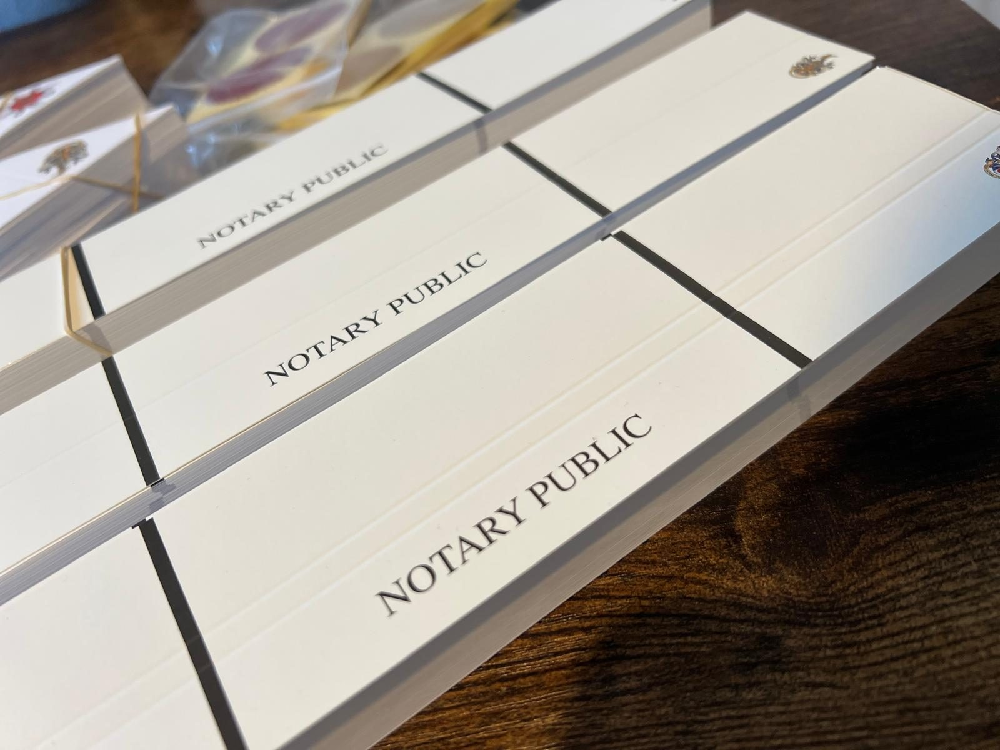

Notary Public for England & Wales · Bristol & the South West
We notarise documents for use in the UK and abroad.
We make the process straightforward.
Appointments are available at our office, your home, workplace or another suitable location, with evening and weekend appointments available by arrangement.
- Regulated by the Faculty Office
- Fixed fees from £90 + VAT
- We come to you, or you come to us
- English & Polish
Faculty Office
Regulated under the Legal Services Act 2007 by the Master of the Faculties. Member of the Notaries Society.
£1 million
Professional indemnity cover, underwritten by HCC International Insurance Company PLC.
Appointments to suit you
Office, home, workplace, care home or hospital. Evenings and weekends by arrangement.
A named notary, start to finish
Your matter is handled by Patrycja Sikorska throughout, never passed between case handlers.
Welcome to Sikorska Notary Limited
Before contacting the Notary Public
A notary is a legal professional who can provide notarial services to clients who have business, property or family interests abroad. Notarial services include witnessing signatures, certifying documents, administering oaths and verifying identities. A notary can certify documents such as passports, diplomas, contracts and deeds.
Each case a notary deals with is different and may require different documents and procedures depending on the receiving country and the purpose of the notarial act. Therefore, it is essential that a notary receives all relevant information as soon as a client makes initial contact.
It is impossible to list all potential notarial services. However, the most common are set out on the dedicated pages below.
If you are not sure if you need a notary’s help, please do not hesitate to email office@sikorskanotary.co.uk.
What to have ready
Four things that speed everything up
Sending these with your initial message means that we can usually provide a fixed-fee quote straight away, avoiding the need for further emails to establish the basic details.
- A scan or photo of the document
- The country it is going to
- Your deadline, if you have one
- Any instructions from a foreign lawyer or agent on notarisation or legalisation, for example apostille, consular legalisation or additional documents
Services
What we can help with
The most common notarial acts are set out on the pages below. If your matter is not listed, it is very likely still something we can deal with.
Notarial services
Witnessing signatures, powers of attorney, oaths and affidavits, certified copies, statutory declarations, and certifying translations, for individuals and companies.
Individual & corporate actsApostille & legalisation
Authentication of the notarial seal by the FCDO, and consular or embassy legalisation where the receiving country is not party to the Hague Convention. Arranged for you.
FCDO & consular routesWill writing
A professionally drafted Will to plan for the future and safeguard your legacy.
Estate planningWho we work with
Individual and corporate clients
The process is the same. What changes is the volume, the paperwork behind it, and how quickly it has to move.
Individuals & families
One document, done properly
Buying abroad, emigrating, marrying overseas, dealing with an estate, or sending a power of attorney to another country.
- Powers of attorney for worldwide use
- Certified copies of passports and certificates
- Consent letters for a parent travelling with children
- Statutory declarations and affidavits
- Notarised Polish ↔ English translations
Business & corporate
Company and corporate documents for use abroad
Company formations abroad, corporate powers of attorney, share pledges, trademark assignments and director certifications.
- Authenticating company documents and transactions
- Certification of identity of directors and officers
- Notarisation of loan agreements and mortgage documents
- Commercial contracts for international use
- Sale and purchase of commercial property abroad
How it works
Four steps, start to finish
Where legalisation is needed, the document leaves our hands and the timing depends on the FCDO or the relevant consulate.
Send the details
A scan of the document, the country it is going to, and your deadline. That is normally enough for a fixed-fee quote.
Get a fixed quote
An individual fixed-fee quote is provided before any notarial work begins, together with anything you need to bring.
Attend the appointment
At our Bristol office, or at your home, workplace, place of business, care home or hospital. Evenings and weekends by arrangement.
Legalisation, if needed
Where the receiving country requires it, apostille and consular legalisation are arranged on your behalf through specialised agents.
Mobile notary service
If you cannot come to the office, we will come to you
If you are looking for a reliable notary public in Bristol and the South West, we provide a full range of professional notarial services for both individuals and businesses. Appointments are available at our office, offering a convenient and professional setting for notarisation services.
For those who are unable to attend our office or who require additional flexibility, mobile notary services are available on request. we can meet you at your home, workplace, place of business, care home, hospital, or another suitable location, subject to availability.
We aim to make the notarisation process straightforward, efficient and convenient, assisting with documents intended for use both in the UK and overseas.
We also offer evening, weekend and out-of-hours appointments by prior arrangement. Mobile visits can be arranged where attendance at our office is not convenient. Please note that mobile services and appointments outside normal business hours may incur an additional fee.
Arrange an appointment
Cross-border work
Documents going to Poland
Polski · English

If your document needs both a certified translation and notarisation, we can arrange both as part of the same appointment.
As a Polish-speaking practice, we prepare notarised translations between Polish and English for certificates, powers of attorney and other legal documents. This means there is no need to instruct a separate translation agency, helping to make the process quicker and more straightforward.
Mówię po polsku.
Nie muszą się Państwo martwić barierą językową ani skomplikowanymi formalnościami. Chętnie wyjaśnię cały proces i pomogę przygotować dokumenty do wykorzystania w Polsce lub w Wielkiej Brytanii.
Commonly needed for Poland
- Pełnomocnictwa
- Poświadczanie kopii dokumentów
- Dokumenty dotyczące nieruchomości
- Dokumenty dotyczące spraw spadkowych
- Dokumenty rodzinne i zgody rodzicielskie na podróżowanie
- Dokumenty dla uczelni, szkół i instytucji edukacyjnych
- Dokumenty dla sądów, urzędów i organów administracji
- Dokumenty dla banków i instytucji finansowych
- Dokumenty dla ZUS, KRUS i spraw emerytalnych
- Dokumenty dla spółek i przedsiębiorców
- Dokumenty do Krajowego Rejestru Sądowego (KRS)
- Dokumenty handlowe i korporacyjne
Client feedback
What our client says
A selection of recent reviews from Google and Yell. Names have been removed for privacy.
I contacted the notary regarding a time-sensitive power of attorney that needed to be accepted across countries, and had a very positive experience.
I needed a power of attorney to sell land in Poland, and I was very impressed by the professionalism and efficiency.
I used the service for a deed poll (name change) and couldn't be happier with the experience.
Exceptional service. Professional, efficient, knowledgeable, and highly responsive throughout. The entire process was seamless.
The entire process was handled professionally, efficiently, and without any issues.
It was a great experience. Professional, friendly, patient, and really knew what they were doing.
Fees
Fixed, and quoted before any work starts
The fees for notarial matters at Sikorska Notary are fixed to give you transparency and peace of mind. An individual fixed fee quote will be provided before we commence any notarial work.
Full fees & disbursementsSimple document
£90 minimum, plus VAT
Notarisation of a simple document such as a passport, driving licence or one page letter.
Where a fixed fee is not possible
£240 per hour, plus VAT
You will be given the fee structure and a proper estimate based on the information provided at the time.
Common questions
The things people ask before they call
What does it cost?
A minimum fee of £90 plus VAT applies to the notarisation of a simple document, such as a passport, driving licence or one-page letter. More complex matters may incur a higher fee, and you will receive an individual fixed-fee quotation before any work begins. Where a fixed fee cannot be provided, the hourly rate is £240 plus VAT, together with a clear estimate of the overall cost. Full details are available on the Fees and Disbursements page.
What should I bring to the appointment?
Always bring original photographic identification. Not a photocopy, not a photo on your phone, a physical ID document, because that is what allows us to verify your identity.
Any other documents needed depend on the matter. Send us the details when you make contact and we will tell you exactly what to bring for your matter, rather than a generic list.
Do I need to book an appointment?
Yes. Visits are by appointment only, so please call or submit an enquiry rather than coming to the office without an appointment.
Do I need an apostille as well?
It depends on the country in which the document will be used and the requirements of the receiving authority. If the Hague Apostille Convention of 5 October 1961 applies, the document will generally require an apostille from the Foreign, Commonwealth & Development Office. If the Convention does not apply, further legalisation by the relevant embassy or consulate may be required, sometimes after an apostille has been obtained. Some Commonwealth countries may accept UK documents without further legalisation, but you should always confirm this with the receiving authority. If you are unsure, send us a copy of the document and tell us where it will be used, and we will advise you. See Apostille & Legalisation.
Can you come to me?
Yes. Mobile appointments are available on request at your home, workplace, place of business, care home, hospital or another suitable location across Bristol and the South West, subject to availability. Mobile visits and appointments outside normal business hours may incur an additional fee.
Can we do this in Polish?
Yes. Patrycja is a Polish speaker and we provide notarised translation from Polish to English and from English to Polish of certificates and legal documents.
I am not sure whether I need a notary at all.
That is a common position to be in, and it costs nothing to ask. Email office@sikorskanotary.co.uk with a description of what you have been asked to provide, and we will tell you whether a notary is the right person for it.
Send the document, get a fixed quote
Tell us what the document is, where it is going and when you need it. That is usually enough to quote a fixed fee straight away.